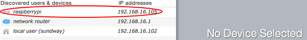
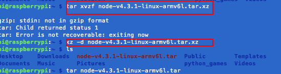
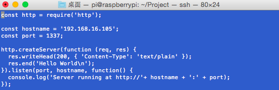
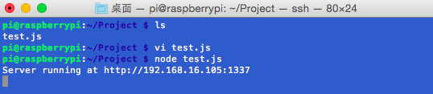
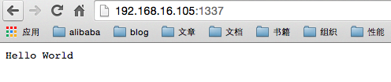

树莓派软件系统
树莓派和其它MUC一样，可以直接以汇编或C语言进行编程，在编写一些简单的程序时，是不会有什么问题的。编写复杂的程序，这样显然会更加吃力。而且学习成本也高，往往我们需要关心的不是用何种语言去编程，而是不要管底层驱动。跟树莓派装上操作系统，便可以解决这些问题。树莓派官方提供了很多可选的系统镜像，这里会以两款比较流行的系统，树莓派官方系统Raspbian及win10 iot进行安装学习。
mac下安装Raspbian
windows下有现成的工具可用，所以windows下其实更简单，但手头没有可用的windows系统，就用mac给树莓派装系统。
下载镜像
可以到树莓派官方下载地址，下载镜像。我选择Raspbian，官方的一个操作系统。
安装系统
- 将SD卡插到电脑上，输入
df -h查看已经挂在的卷。（可以找到我们的SD卡在系统里对应的设备文件） - 使用
diskutil unmount将这些分区卸载。(如我的SD卡在系统里对应的设备文件/dev/disk4s1，则需要使用‘’‘diskutil unmount /dev/disk4s1将SD卡分区卸载。) - 再使用
diskutil list确认/dev/disk4s1已被卸载。 - 使用dd命令将系统镜像写入。
dd bs=4m if=2016-02-09-jessie-raspbian.img of=/dev/rdisk4｀
SD系统写入成功。

PS:
- 系统镜像分‘Full desktop image’和‘Minimal image based on Debian Jessie’，我安装的是前面的，太大了，以至于32G的SD不够用，开发的还是建议按装lite版本。
- 如果第一次安装树莓派，外接显示器可能无法连接，需要修改配置文件config.txt里的参数
hdmi_safe=1 //取消注释
config_hdmi_boost=4 //取消注释
连接树莓派
采用ssh的方式连接树莓派，mac下下了一个Ip Scanner查看局域网里设备ip地址。找到Raspberra pi的ip地址。 
树莓派默认的账户: pi，密码：raspberry。（之前的操作系统必须先链接显示器，用键盘确认），ssh首次登录会生成密钥，选择yes,连接ssh pi@ip,输入密码，登录成功。

由于我的系统时重装的，所以登录时会报错。本机直接输入ssh-keygen -R hostname重新生成密钥即可。

安装nodejs
因为项目时基于node开发的，所以只需要装一下node即可。树莓派使用的架构用的架构是ARMv6，所以需要下载一个ARMv6版本的node，linux下下载命令wget https://nodejs.org/dist/v4.3.1/node-v4.3.1-linux-armv6l.tar.xz

等待下载，家里网速太慢。。。
下载成功之后需要解压.xz文件，先xz -d xxx.tar.xz将xxx.tar.xz解压成xxx.tar。然后，再用 tar xvf xxx.tar来解包

由于node已经编译过了，不需要在本地编译了，直接使用即可，done.
测试Demo



Done，环境搭建完成。